import numpy as np
import matplotlib.pyplot as plt
import matplotlib
with open('S2A_MSIL2A_20170613T101031_46_73_all_bands.npy', 'rb') as f:
sen2 = np.load(f)
with open('S2A_MSIL2A_20170613T101031_46_73_esaworldcover.npy', 'rb') as f:
lulc = np.load(f)[0]
# extract rgb and scale for plotting
rgb = np.dstack([sen2[3], sen2[2], sen2[1]])
rgb = rgb/np.max(rgb)7 Example code for land use/land cover classification from satellite imagery
Michael Mommert, University of St. Gallen, 2023
plot satellite image and lulc map (using ESA Worldcover colormap)
# plot satellite image
f, ax = plt.subplots(1, 1, figsize=(4, 4))
ax.imshow(0.1+1.3*rgb)
plt.subplots_adjust(0, 0, 1, 1, 0, 0)
ax.get_yaxis().set_visible(False)
ax.get_xaxis().set_visible(False)
plt.axis('off')
plt.savefig('s2.png', pad_inches=0)
# define colormap from https://esa-worldcover.s3.eu-central-1.amazonaws.com/v200/2021/docs/WorldCover_PUM_V2.0.pdf
wc_labels = {
10: "Tree cover",
20: "Shrubland",
30: "Grassland",
40: "Cropland",
50: "Built-up",
60: "Bare/sparse vegetation",
70: "Snow and Ice",
80: "Permanent water bodies",
90: "Herbaceous wetland",
95: "Mangroves",
100: "Moss and lichen",
}
colors = [
[0,100,0],
[0,100,0],
[255,187,34],
[255,187,34],
[255,155,76],
[255,155,76],
[240,150,255],
[240,150,255],
[250,0,0],
[250,0,0],
[180,180,180],
[180,180,180],
[240,240,240],
[240,240,240],
[0,100,200],
[0,100,200],
[0,150,160],
[0,150,160],
[0,207,117],
[250,230,160],
]
# normalize colors and define colormap
colors = np.array(colors) / 255
cmap = matplotlib.colors.ListedColormap(colors, name='esa_worldcover')
# plot lulc map
fig, ax = plt.subplots(1, 1, figsize=(4,4))
im = ax.imshow(lulc, interpolation="none", cmap=cmap, vmin=5, vmax=101)
plt.subplots_adjust(0, 0, 1, 1, 0, 0)
ax.get_yaxis().set_visible(False)
ax.get_xaxis().set_visible(False)
plt.axis('off')
plt.savefig('lulc.png', pad_inches=0)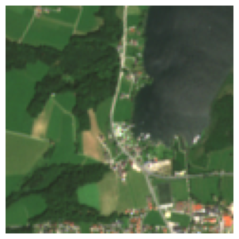
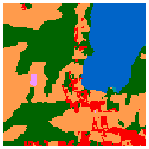
Thresholding
Thresholding based on single bands
r_filter = np.zeros_like(sen2[3])
# only select those pixels with a g value greater than a given value
r_filter[sen2[3] > 1100] = 1
# plot results
f, ax = plt.subplots(1, 2, figsize=(8, 4))
ax[0].imshow(0.1+1.3*rgb)
ax[1].imshow(r_filter)
""" # write results to file
f, ax = plt.subplots(1, 1, figsize=(4, 4))
ax.imshow(r_filter)
plt.subplots_adjust(0, 0, 1, 1, 0, 0)
ax.get_yaxis().set_visible(False)
ax.get_xaxis().set_visible(False)
plt.axis('off')
plt.savefig('r_filter.png', pad_inches=0) """" # write results to file\nf, ax = plt.subplots(1, 1, figsize=(4, 4))\nax.imshow(r_filter)\nplt.subplots_adjust(0, 0, 1, 1, 0, 0)\nax.get_yaxis().set_visible(False) \nax.get_xaxis().set_visible(False) \nplt.axis('off')\nplt.savefig('r_filter.png', pad_inches=0) "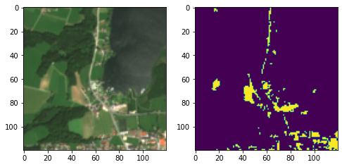
Thresholding based on multiple bands
r,g,b,nir = sen2[3], sen2[2], sen2[1], sen2[8]
# define vegetation and water index
ndvi = (nir - r)/(nir + r)
ndwi = (nir - g)/(nir + g)
# apply thresholding
veg = np.zeros_like(ndvi)
veg[ndvi > 0.6] = 1
water = np.zeros_like(ndwi)
water[ndwi > 0.89] = 1
# plot results
f, ax = plt.subplots(1, 3, figsize=(12, 4))
ax[0].imshow(0.1+1.3*rgb)
ax[0].set_title('RGB')
ax[1].imshow(veg)
ax[1].set_title('Vegetation')
ax[2].imshow(water)
ax[2].set_title('Water')
""" # write results to file
f, ax = plt.subplots(1, 1, figsize=(4, 4))
ax.imshow(veg)
plt.subplots_adjust(0, 0, 1, 1, 0, 0)
ax.get_yaxis().set_visible(False)
ax.get_xaxis().set_visible(False)
plt.axis('off')
plt.savefig('veg_ndvi.png', pad_inches=0)
f, ax = plt.subplots(1, 1, figsize=(4, 4))
ax.imshow(water)
plt.subplots_adjust(0, 0, 1, 1, 0, 0)
ax.get_yaxis().set_visible(False)
ax.get_xaxis().set_visible(False)
plt.axis('off')
plt.savefig('water_ndwi.png', pad_inches=0) """" # write results to file\nf, ax = plt.subplots(1, 1, figsize=(4, 4))\nax.imshow(veg)\nplt.subplots_adjust(0, 0, 1, 1, 0, 0)\nax.get_yaxis().set_visible(False) \nax.get_xaxis().set_visible(False) \nplt.axis('off')\nplt.savefig('veg_ndvi.png', pad_inches=0)\n \nf, ax = plt.subplots(1, 1, figsize=(4, 4))\nax.imshow(water)\nplt.subplots_adjust(0, 0, 1, 1, 0, 0)\nax.get_yaxis().set_visible(False) \nax.get_xaxis().set_visible(False) \nplt.axis('off')\nplt.savefig('water_ndwi.png', pad_inches=0) "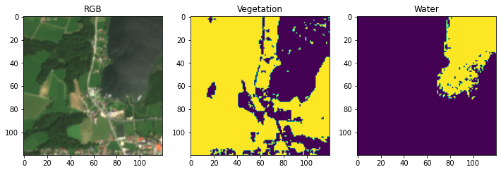
Clustering
k-Means examples
generate some random data
import numpy as np
from numpy.random import multivariate_normal, seed
n = 50 # sample size per cluster
# set random seed
seed(42)
x = np.vstack(
[multivariate_normal((0, 1), [[0.07, 0], [0, 0.07]], size=n),
multivariate_normal((1, 1), [[0.07, 0], [0, 0.07]], size=n),
multivariate_normal((1, 0), [[0.07, 0], [0, 0.07]], size=n)])
y = np.array([0] * n + [1] * n + [2] * n)plot distribution
import matplotlib.pyplot as plt
f, ax = plt.subplots(1, 1, figsize=(5, 5))
ax.scatter(x[:,0], x[:,1], color='lightgray')
plt.savefig('kmeans_setup.png', dpi=150)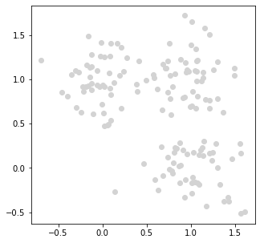
initialization: pick random centroids, plot
k = 3
center_ids = np.random.randint(low=0, high=len(x), size=k)
f, ax = plt.subplots(1, 1, figsize=(5, 5))
colors = ['gray'] * len(x)
# plot all datapoints
ax.scatter(x[:,0], x[:,1], color='lightgray')
# indicate cluster centers
for i, c in enumerate(center_ids):
ax.scatter(x[:,0][c], x[:,1][c], s=200, marker='x', vmin=0, vmax=k, c=i)
plt.savefig('kmeans_init.png', dpi=150)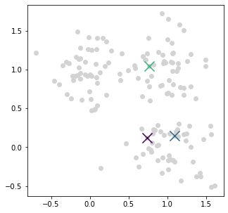
compute distances and assign data points to clusters, plot
def compute_distances(x, cluster_centers):
distances = []
for cluster_center in cluster_centers:
distances.append(np.sqrt((x[:,0] - cluster_center[0])**2 + (x[:,1] - cluster_center[1])**2))
distances = np.dstack(distances)[0]
# assign clusters based on distance
clusters = np.argmin(distances, axis=1)
return distances, clusters
dist, y_pred = compute_distances(x, x[center_ids])
f, ax = plt.subplots(1, 1, figsize=(5, 5))
colors = ['gray'] * len(x)
# plot all datapoints
ax.scatter(x[:,0], x[:,1], c=y_pred, vmin=0, vmax=k, alpha=0.5)
# indicate cluster centers
for i, c in enumerate(center_ids):
ax.scatter(x[:,0][c], x[:,1][c], s=200, marker='x', vmin=0, vmax=k, c=i)
plt.savefig('cluster_assignment.png', dpi=150)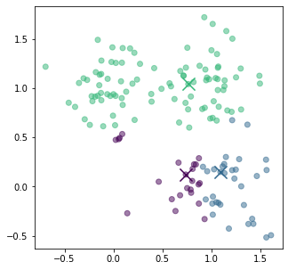
recompute centroids, plot
def update_cluster_centers(x, y_pred):
k = len(set(y_pred))
cluster_centers = []
for i in range(k):
cluster_centers.append((np.mean(x[y_pred == i, 0]),
np.mean(x[y_pred == i, 1])))
return cluster_centers
cluster_centers = update_cluster_centers(x, y_pred)
f, ax = plt.subplots(1, 1, figsize=(5, 5))
colors = ['gray'] * len(x)
# plot all datapoints
ax.scatter(x[:,0], x[:,1], c=y_pred, vmin=0, vmax=k, alpha=0.5)
# indicate cluster centers
for j, c in enumerate(cluster_centers):
ax.scatter(c[0], c[1], s=200, marker='x', c=j, vmin=0, vmax=k)
plt.savefig('kmeans_000.png', dpi=150)--------------------------------------------------------------------------- TypeError Traceback (most recent call last) File ~/software/anaconda3/lib/python3.9/site-packages/matplotlib/axes/_axes.py:4221, in Axes._parse_scatter_color_args(c, edgecolors, kwargs, xsize, get_next_color_func) 4220 try: # Is 'c' acceptable as PathCollection facecolors? -> 4221 colors = mcolors.to_rgba_array(c) 4222 except (TypeError, ValueError) as err: File ~/software/anaconda3/lib/python3.9/site-packages/matplotlib/colors.py:363, in to_rgba_array(c, alpha) 359 raise ValueError("Using a string of single character colors as " 360 "a color sequence is not supported. The colors can " 361 "be passed as an explicit list instead.") --> 363 if len(c) == 0: 364 return np.zeros((0, 4), float) TypeError: len() of unsized object The above exception was the direct cause of the following exception: ValueError Traceback (most recent call last) /home/mommermi/dokumente/2023/hft_stuttgart/presentations/landnutzung/data/segmentation.ipynb Cell 21 in <cell line: 18>() <a href='vscode-notebook-cell:/home/mommermi/dokumente/2023/hft_stuttgart/presentations/landnutzung/data/segmentation.ipynb#X26sZmlsZQ%3D%3D?line=16'>17</a> # indicate cluster centers <a href='vscode-notebook-cell:/home/mommermi/dokumente/2023/hft_stuttgart/presentations/landnutzung/data/segmentation.ipynb#X26sZmlsZQ%3D%3D?line=17'>18</a> for i, c in enumerate(cluster_centers): ---> <a href='vscode-notebook-cell:/home/mommermi/dokumente/2023/hft_stuttgart/presentations/landnutzung/data/segmentation.ipynb#X26sZmlsZQ%3D%3D?line=18'>19</a> ax.scatter(x[:,0], x[:,1], s=200, marker='x', vmin=0, vmax=k, c=i) <a href='vscode-notebook-cell:/home/mommermi/dokumente/2023/hft_stuttgart/presentations/landnutzung/data/segmentation.ipynb#X26sZmlsZQ%3D%3D?line=20'>21</a> plt.savefig('kmeans_000.png', dpi=150) File ~/software/anaconda3/lib/python3.9/site-packages/matplotlib/__init__.py:1412, in _preprocess_data.<locals>.inner(ax, data, *args, **kwargs) 1409 @functools.wraps(func) 1410 def inner(ax, *args, data=None, **kwargs): 1411 if data is None: -> 1412 return func(ax, *map(sanitize_sequence, args), **kwargs) 1414 bound = new_sig.bind(ax, *args, **kwargs) 1415 auto_label = (bound.arguments.get(label_namer) 1416 or bound.kwargs.get(label_namer)) File ~/software/anaconda3/lib/python3.9/site-packages/matplotlib/axes/_axes.py:4387, in Axes.scatter(self, x, y, s, c, marker, cmap, norm, vmin, vmax, alpha, linewidths, edgecolors, plotnonfinite, **kwargs) 4384 if edgecolors is None: 4385 orig_edgecolor = kwargs.get('edgecolor', None) 4386 c, colors, edgecolors = \ -> 4387 self._parse_scatter_color_args( 4388 c, edgecolors, kwargs, x.size, 4389 get_next_color_func=self._get_patches_for_fill.get_next_color) 4391 if plotnonfinite and colors is None: 4392 c = np.ma.masked_invalid(c) File ~/software/anaconda3/lib/python3.9/site-packages/matplotlib/axes/_axes.py:4227, in Axes._parse_scatter_color_args(c, edgecolors, kwargs, xsize, get_next_color_func) 4225 else: 4226 if not valid_shape: -> 4227 raise invalid_shape_exception(c.size, xsize) from err 4228 # Both the mapping *and* the RGBA conversion failed: pretty 4229 # severe failure => one may appreciate a verbose feedback. 4230 raise ValueError( 4231 f"'c' argument must be a color, a sequence of colors, " 4232 f"or a sequence of numbers, not {c}") from err ValueError: 'c' argument has 1 elements, which is inconsistent with 'x' and 'y' with size 150.
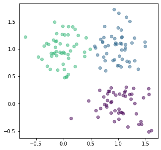
repeat…
for i in range(1, 10):
dist, y_pred = compute_distances(x, cluster_centers)
cluster_centers = update_cluster_centers(x, y_pred)
# setup axis for plot
f, ax = plt.subplots(1, 1, figsize=(5, 5))
# plot all datapoints
ax.scatter(x[:,0], x[:,1], c=y_pred, vmin=0, vmax=k, alpha=0.5)
# mark cluster centers
for j, c in enumerate(cluster_centers):
ax.scatter(c[0], c[1], s=200, marker='x', c=j, vmin=0, vmax=k)
# add label to indicate iteration
ax.annotate("Iteration {}".format(i), xy=(-0.7, 1.7))
plt.savefig('kmeans_{:03d}.png'.format(i), dpi=150)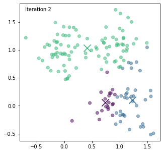
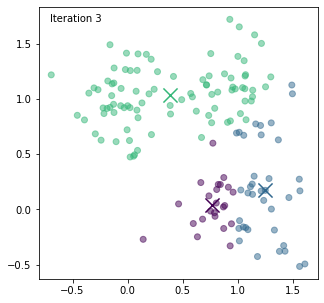
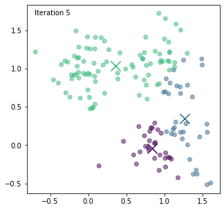
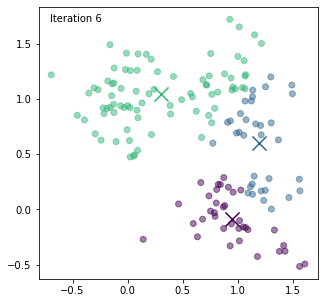
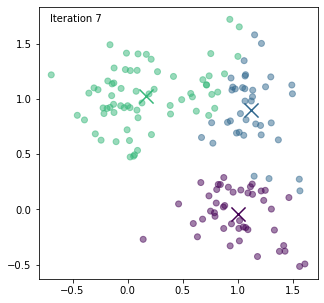
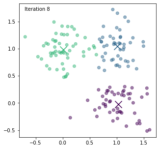
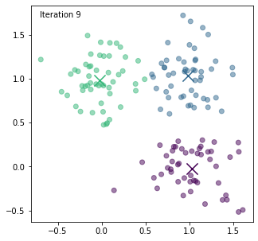
Apply k-Means to satellite image data
from sklearn.cluster import KMeans
from sklearn.preprocessing import RobustScaler
# extract R, G, B, NIR and reshape to Nx4
rgbnir = np.dstack([sen2[3], sen2[2], sen2[1], sen2[8]]).reshape(-1, 4)
# scale the data
scaler = RobustScaler()
rgbnir_scaled = scaler.fit_transform(rgbnir)
# perform k-Means
model = KMeans(n_clusters=3)
clusters = model.fit_predict(rgbnir_scaled)
# reshape cluster assignments to map
clusters_map = clusters.reshape(120, 120)plot results
f, ax = plt.subplots(1, 2, figsize=(8, 4))
rgb = np.dstack([sen2[3], sen2[2], sen2[1]])
rgb = rgb/np.max(rgb)
ax[0].imshow(0.1+1.3*rgb)
ax[1].imshow(clusters_map, vmin=0, vmax=k)
f, ax = plt.subplots(1, 1, figsize=(4, 4))
ax.imshow(clusters_map, vmin=0, vmax=k)
plt.subplots_adjust(0, 0, 1, 1, 0, 0)
ax.get_yaxis().set_visible(False)
ax.get_xaxis().set_visible(False)
plt.axis('off')
plt.savefig('kmeans_results_03.png', pad_inches=0)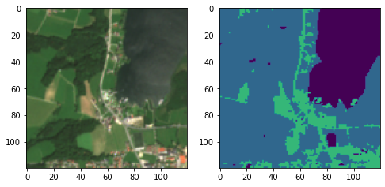
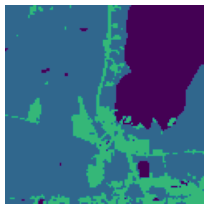
generate segmentation masks for different k
for k in range(2, 11):
# perform k-Means
model = KMeans(n_clusters=k)
clusters = model.fit_predict(rgbnir_scaled)
# reshape cluster assignments to map
clusters_map = clusters.reshape(120, 120)
f, ax = plt.subplots(1, 1, figsize=(4, 4))
ax.imshow(clusters_map, vmin=0, vmax=k)
plt.subplots_adjust(0, 0, 1, 1, 0, 0)
ax.get_yaxis().set_visible(False)
ax.get_xaxis().set_visible(False)
plt.axis('off')
plt.savefig('kmeans_results_{:02d}.png'.format(k), pad_inches=0)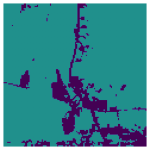
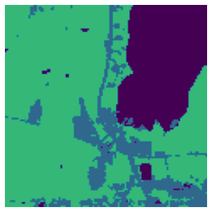
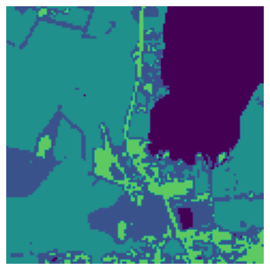
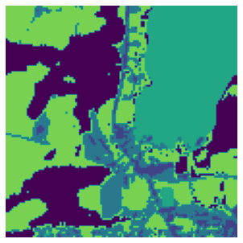
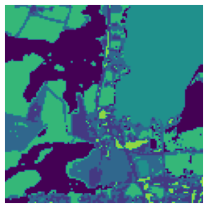
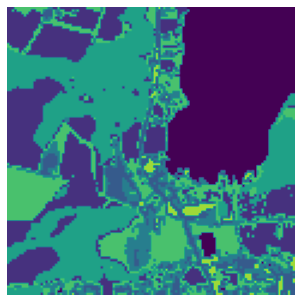
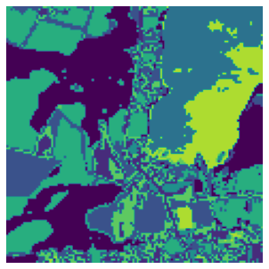
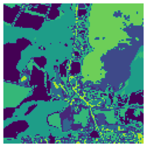
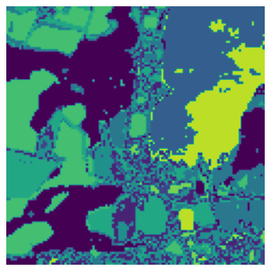
U-Net
visualize prediction from a U-Net trained on S2 and ESA Worldcover
with open('unet_prediction.npy', 'rb') as f:
unet_pred = np.load(f)[0]
# plot prediction
fig, ax = plt.subplots(1, 1, figsize=(4,4))
im = ax.imshow(unet_pred*10+10, interpolation="none", cmap=cmap, vmin=5, vmax=101)
plt.subplots_adjust(0, 0, 1, 1, 0, 0)
ax.get_yaxis().set_visible(False)
ax.get_xaxis().set_visible(False)
plt.axis('off')
plt.savefig('unet_pred.png', pad_inches=0)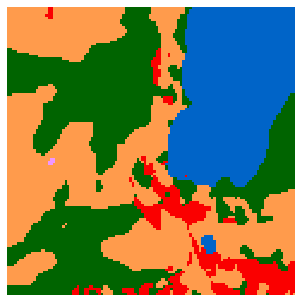